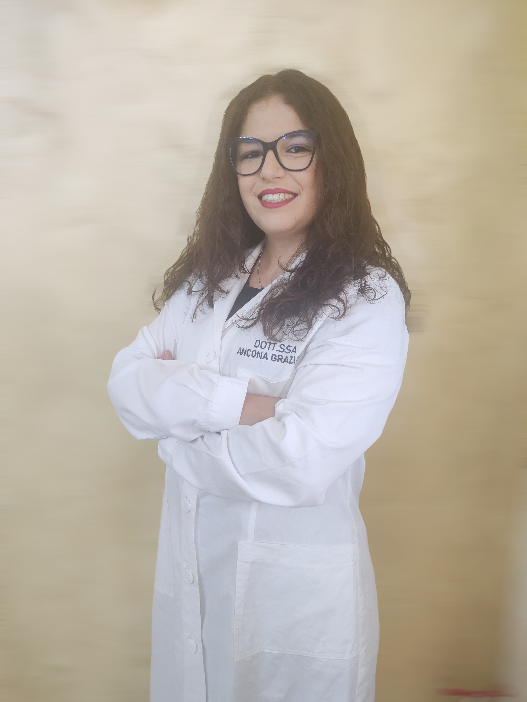

La mia storia, la mia formazione, la mia passione

Sono una Biologa Nutrizionista, iscritta all'Ordine dei Biologi, con la passione per l'alimentazione e il benessere della persona.
Credo che non esista una dieta universale: ogni persona ha esigenze uniche, e il mio lavoro è ascoltare, capire e costruire insieme un percorso su misura.
Il mio approccio unisce scienza, empatia e pragmaticità. Niente soluzioni impossibili, ma cambiamenti sostenibili che migliorano la qualità della vita giorno dopo giorno.